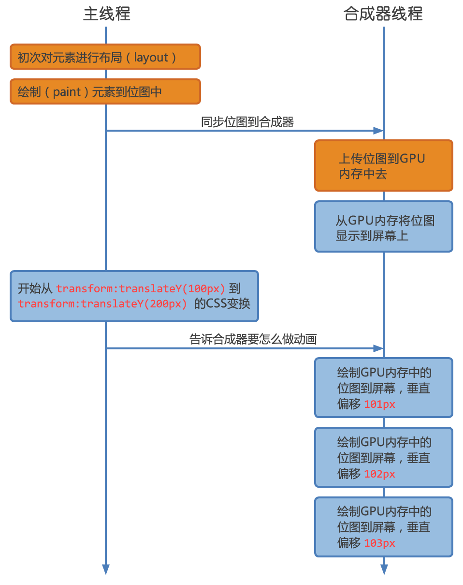

动画
让体验更美好
Created by @盟主zuo
Css3 有那些?
- Transform
- Transition
- Animation
关注点
- 使用
- 区别
- 性能
- 渲染
- 坑
使 用
Transform
- Translate3d() 3D移动
- Rotate() 旋转
- Scale() 缩放
- Skew() 倾斜
- Matrix() 矩阵变形
Transform

Matrix 矩阵变形
http://s.codepen.io/fta/fullembedgrid/ifnqH?type=embed&animations=run matrix3d 4*4 https://dev.opera.com/articles/understanding-the-css-transforms-matrix/ 资料 http://peterned.home.xs4all.nl/matrices/#-1.624,1.180,0.062,-0.676,51.793,-103.582 工具
Transition
过渡：[元素属性(可单个、多个、all ) ] [执行时间(s、ms) ] [延迟执行时间] [过度类型 (linear ease ease-in ease-in-out cubic-bezier) ]
3D
- transform-style：preserve-3d + perspective 作用于子元素+ transform:translate3d(x,y,z(px)) 进行3d变换
http://ericlva.github.io/animation/3d.html
Animation
区别
Transform Transition 需要用户触发才能展示动态效果(:link、:hover、:active、:focus)或JS click focus事件， 如果没有触发直接给元素设transform transition,则只能看到终止时的状态效果。Animation 无须触发，只需直接绑定即可。
性能
使用position:absolute 、fixed做动画，避免发生渲染树的连带渲染行为，也就是Reflow(重排)、Repaint (重绘)
启用GPU 加速
cpu
gpu
节省了哪些时间？
- CPU进行Layout, Paint的时间
- CPU向GPU传输位图的时间
渲染

CSS属性
- 避免不必要的复杂的CSS选择器，将消耗更多的CPU;
- 尽量不触发Layout，使用transform代替top, left的动画 ，transform只触发整个页面composite 重组 http://csstriggers.com
- 避免DOM 树太深，改变子节点将引起整个父节点乃至整个根节点的Reflow,尽量避免触发layout;
- css3 最耗性能属性gradient (实时描绘，然后放到内存中) 、box-shadow、 border-radius 、，Position:absolute、fixed 用 CPU，translate、用GPU, translate3D耗电，Retain 屏更加消耗内存; http://ericlva.github.io/animation/paint.html
- will-change 提前渲染 https://dev.opera.com/articles/css-will-change-property
http://www.tuicool.com/articles/qu6ZZ3M
will-change:transform,opacity;
坑
- 三星 Android 浏览器Tab(如：酒店城市选择页)动画无效， JS引起一次Reflow方可;
- Android2.3 动画不动 100%要留一帧空出来。在100%之前写一个最后值 99%那里写 @-webkit-keyframes demo { 0% { opacity: 0; } 99% {opacity: 1;} 100% {} }
- Android 4.4.2 Note3 执行opacity动画，浮层会闪烁
延长动画执行时间;
设置动画当前追加的classname opacity值=动画结束状态； - 伪类不支持动画 (Android 低版本 )
- 元素状态由 Relative 变成 Fixed 会抖动
舒适愉快的动画需给合
- 物体质量
- 大小
- 力
- 惯性
- 视觉连贯性(清晰表达而非困扰，引导用户注意力而 非分散)
- 动作一致性
- UI的无缝衔接
- 整体美感
- 。。。。。。
创意+情感化设计
https://dash.readme.io/login
Google I/O 2014 Material Design
http://ericlva.github.io/animation/Material-design.mp4